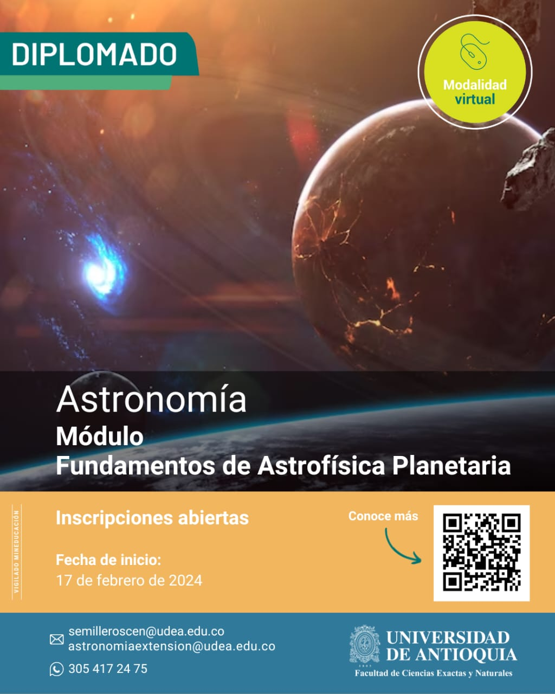
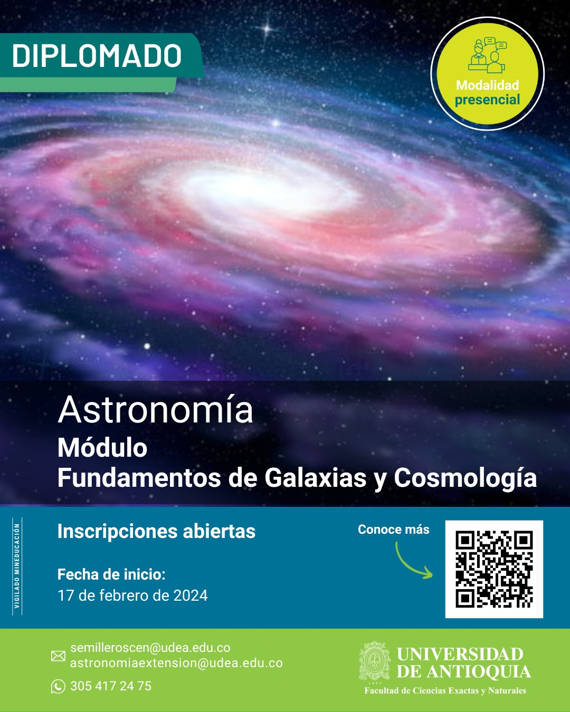
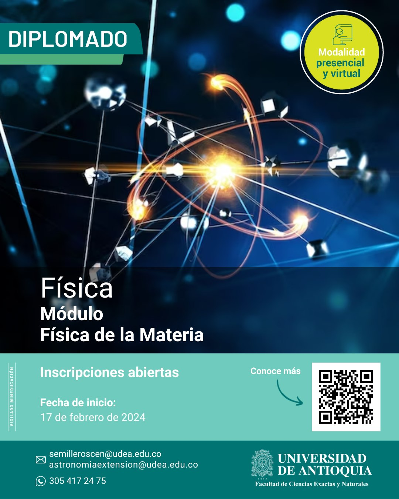

La información sobre el pregrado de Astronomía de la
Universidad de Antioquia será alojada a partir de enero de
2024 en la página oficial de
la Universidad de Antioquia.
Si desea información sobre los cursos de los cursos
del Diploma de Astronomía y el Diploma de Física
puede consultarlos
haciendo clic en
este enlace para visitar nuestro sitio temporal.


